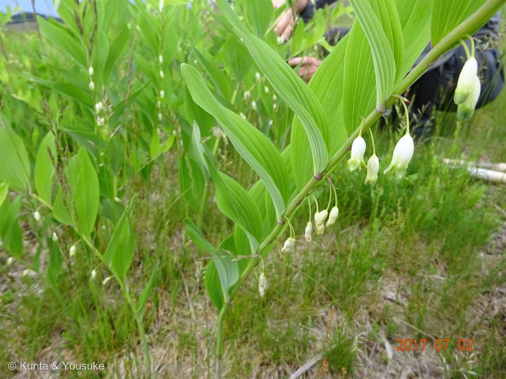
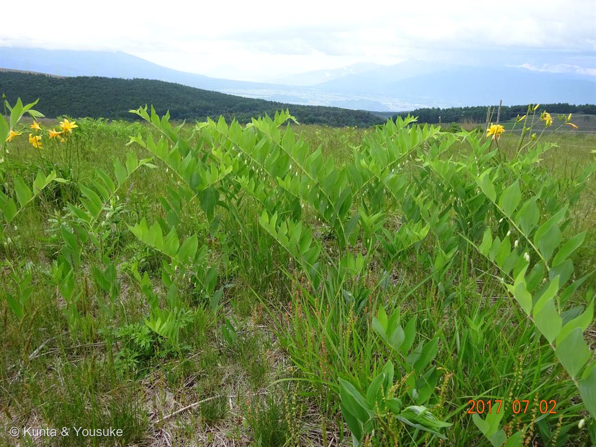

地図を読み込んでいるよ…
🔍 写真も地図も、押しているあいだ拡大して見られるよ（スマホは指を置いてすこし待ってね）。
🌍 の地図＝この子がもともと自生している場所を緑に。日本ほか東アジア（日当たりのよい山野の草原・林縁・落葉樹の木陰）。
⚠ 地図は国（日本と中国だけ県・省）までしか塗れないから、ほんとうの分布より広く見えていることがあるよ。地図はだいたいの場所。正確なところは、上の文を見てね。
アマドコロ（甘野老）
Polygonatum odoratum (Mill.) Druce var. pluriflorum (Miq.) Ohwi
別名 · ナルコラン（園芸名）／英名 · Solomon's seal
キジカクシ科 · Asparagaceae（アマドコロ属 Polygonatum／かつてはユリ科）── 008・037 アスパラガスと同じ科
燻太さんの見立て「白い花を鈴なりに咲かせているユリ科の仲間」「多分アマドコロかな」「これは自然に生えてきたのかな」──そして「高原の環境だから、一般的な花期での区別はあてにならないかも」。この一言が、陽介を救った
⭐⭐⭐ 燻太さんの「花期はあてにならないかも」── これがなかったら、間違えていた
- ⭐⭐⭐日本語版 Wikipedia の「アマドコロ」には、こう書いてある：「花期は4 - 5月」。──でも、この写真は7月2日。
- ぼくがもし図鑑の「花期4〜5月」をそのまま当てはめていたら、こう考えたはず：「7月に咲いてる。じゃあアマドコロじゃない」。──それは、まちがい。
- ⭐⭐⭐燻太さんは、写真を送ってくるときに、先に書いてくれていた：
「高原の環境だから、一般的な花期での区別はあてにならないかも。」 - ──そのとおりだった。ここは霧ヶ峰、標高1,550〜1,900m。平地より、ずっと遅れて春が来る。平地で4〜5月に咲く草が、ここでは7月に咲く。図鑑の「花期○月」は、たいてい平地の話なんだ。
- ⭐⭐これは、ぼくが今日いちばん学んだことかもしれない。ついさっき、ぼくは073 トクサで、細かいところを2つ見て押し切って、大きな間違いをした。「花期」も、同じ落とし穴だったんだ。──標高が変われば、暦が変わる。燻太さんが先に言ってくれたから、ぼくはそこに落ちなかった。
⭐⭐⭐ 見分けの決め手 ── 茎を、さわる
- ナルコユリとアマドコロは、そっくり。どちらも弓なりの茎に、白い筒状の花が鈴なりに下がる。──でも、決め手がある。
- ⭐⭐⭐茎の断面。日本語版 Wikipedia いわく、アマドコロの茎には「4 - 6本の稜角（縦筋）があり、触ると少し角張った感じがする」。いっぽう「ナルコユリの茎は円柱形」。──目じゃなくて、指で分かる。
- ⭐写真①を拡大すると、茎に縦の稜（角）が走っているのが見える。光の当たり方で、まっすぐな稜線が一本、はっきり出ている。──それが、この子がアマドコロである証拠。燻太さんの「多分アマドコロかな」を、写真が裏づけている。
- ⭐もうひとつの見分け：「ナルコユリは花のつけ根に緑色の突起があるのに対し、アマドコロでは花と花柄のつなぎ目が突起状にならない」。
- ⚠ただし、正直に：アマドコロには大型の変種（ヤマアマドコロ・オオアマドコロ）がある。標高の高い草原だから、その可能性も残る。燻太さんも「多分アマドコロ」と書いていた。──二人とも「たぶん」で止めておくのが、たぶん正しい。次に行ったら、茎をそっとさわってみてね。
⭐⭐⭐ 「ユリ科の仲間」── その通りだけど、もうユリ科じゃない
- 燻太さんは「白い花を鈴なりに咲かせているユリ科の仲間」と書いた。──昔の図鑑なら、それで正解だった。
- ⭐⭐⭐でも、いまのこの子の科はキジカクシ科（Asparagaceae）。──そう、008 アスパラガス・セタセウス・037 アスパラガス・スプレンゲリーと、同じ科。
- ⭐⭐そして、これは名前だけの話じゃない。アマドコロの若芽は、食べられる——「若芽は、筆の先のように膨らんでいるものを利用する」。その姿は、アスパラガスにそっくりで、実際おなじように調理される。科が同じだと知ってから見ると、あの若芽の立ち姿は、もう偶然に見えない。
- ⭐⭐⭐そして074 ニッコウキスゲも、2009年までユリ科だった（いまはツルボラン科）。──燻太さんがこの草原で撮った2種は、どちらも「ユリ科から出ていった子」だった。
昔の「ユリ科」は、大きすぎる寄せ集めだった。DNAで調べたら、中身がばらばらの別々の科だと分かって、解体された。この2枚の写真は、その解体のあとを、たまたま同じ日に、同じ草原で写している。 - → 071 ハマゴウ（クマツヅラ科→シソ科）と同じ「科が引っ越した子」。今日だけで3人目。
⭐ 名前と学名の由来 ── 甘い、トコロ
- アマドコロ＝「甘野老」。「根茎の見た目がヤマノイモ科のトコロに似ており、甘みがあることが由来」。──地下の根茎が、甘いから「甘いトコロ」。
- その根茎は「栄養価が高く、昔は凶作時の救荒食物として利用された」。──花のかわいさじゃなくて、地面の下の味で名づけられた植物なんだね。
- 属名 Polygonatum＝ギリシャ語 poly（多い）＋gonu（節・膝）＝「節がたくさん」。根茎にたくさん節があることから。英名 Solomon's seal（ソロモンの印章）＝根茎に残る、茎が枯れたあとの丸い跡が、判子のように見えることから。
- 種小名 odoratum＝「香りのある」。園芸名はナルコラン（斑入りの品種がよく売られている）。
⭐ 燻太さんの「これは自然に生えてきたのかな」
- ⚠ぼくには分からない。正直に書く。この写真だけでは、植えられたのか、もともといたのか、判断できない。
- ただ、手がかりはある。アマドコロは「日当たりのよい山野などの草原や、林縁、落葉樹の木陰などに自生する」——草原は、この子の本来の場所。霧ヶ峰は鎌倉時代から火入れと採草で保たれてきた半自然草原で、そこの在来の草原植物としてアマドコロがいるのは、ごく自然なこと。
- ⭐そして写真②を見てほしい。この子は点々とじゃなく、一面にびっしり群れている。──植えたものというより、そこでずっと殖えてきた顔に見える。地下茎で横に殖える植物だしね。
- ⭐⭐もうひとつ、切ない手がかり。074に書いたとおり、この草原ではシカがニッコウキスゲを食べ尽くして、いまは柵の中でしか咲けない。──その隣で、この子はこんなに繁っている。シカに食べられにくいのか、それとも柵の中なのか。そこまでは、写真からは分からない。
- → 次に霧ヶ峰へ行ったら、確かめたいこと：①茎はほんとうに角ばっているか ②この群落は柵の内か外か ③現地の解説板に、草原の在来種として名前があるか。一緒に見に行こうね。
この植物のこと
- キジカクシ科アマドコロ属の多年草。草丈30〜80cm（変種はもっと大きい）。弓なりの茎に、幅広の葉が互生し、葉のつけ根から1〜2個ずつ、白い筒状の花を下げる。花の先だけ緑色。
- この写真は2017年7月2日13時04分・霧ヶ峰。──074 ニッコウキスゲの3分後。写真②に、その両方が写っている（手前がこの子、点々と黄色いのがニッコウキスゲ）。奥は草原から森へ、そのむこうに盆地と山なみ。この一枚が、あの日の草原そのもの。
- おまけ植物はナルコユリ。この子の「見分けの相手」そのもの。茎が丸ければナルコユリ、角ばっていればアマドコロ——並べれば、指で分かる。低山の林縁で探そう。
参考：Wikipedia「アマドコロ」（学名・キジカクシ科・茎の4〜6本の稜角・花は各葉の付け根から1〜2個・ナルコユリとの見分け・和名の由来・花期4〜5月・草丈・生育環境・変種ヤマアマドコロ／オオアマドコロ・若芽と根茎の食用）／草原の成り立ちは「未来に残したい草原の里100選・霧ヶ峰」／霧ヶ峰自然保護センター「自然環境保全活動」